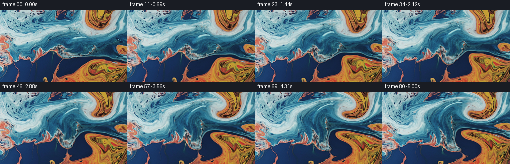
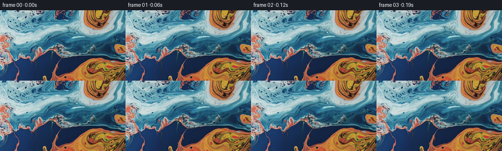

候选 01 · 2026-11-08T22:47:39.283605+00:00 · 点开播放与检查图
inspection.png

transition_check.png

代码变化
--- 上一保存版本
+++ 本次保存版本
@@ -0,0 +1,159 @@
+"""Generate a macro-liquid animation by transporting the supplied RGB image.
+
+The evolving texture map is an area-preserving flow of smooth stream functions.
+Fine, low-amplitude travelling surface waves provide the secondary liquid motion.
+No outside imagery, models, or rendering engines are used.
+"""
+from pathlib import Path
+import json
+import numpy as np
+from PIL import Image
+import artifact_io
+
+ROOT = Path(__file__).resolve().parent
+
+
+def cubic_weight(x):
+ a = np.abs(x)
+ return np.where(a <= 1, 1.5*a**3 - 2.5*a**2 + 1,
+ np.where(a < 2, -.5*a**3 + 2.5*a**2 - 4*a + 2, 0))
+
+
+def reflected(i, size):
+ i = np.mod(i, 2*(size-1))
+ return np.where(i < size, i, 2*(size-1)-i)
+
+
+def sample_rgb(image, x, y):
+ """Catmull-Rom reconstruction, always from the unblurred original image."""
+ h, w = image.shape[:2]
+ ix, iy = np.floor(x).astype(np.int32), np.floor(y).astype(np.int32)
+ fx, fy = x-ix, y-iy
+ wx = [cubic_weight(fx-j) for j in (-1, 0, 1, 2)]
+ wy = [cubic_weight(fy-j) for j in (-1, 0, 1, 2)]
+ result = np.zeros((*x.shape, 3), np.float64)
+ for j in range(4):
+ yy = reflected(iy+j-1, h)
+ row = np.zeros_like(result)
+ for i in range(4):
+ xx = reflected(ix+i-1, w)
+ row += image[yy, xx] * wx[i][..., None]
+ result += row * wy[j][..., None]
+ return result
+
+
+def velocity(x, y, t, w, h):
+ """Analytic curl of a streamfunction: incompressible, edge-tangent flow."""
+ kx, ky = np.pi/(w-1), np.pi/(h-1)
+ sx, sy = np.sin(kx*x), np.sin(ky*y)
+ cx, cy = np.cos(kx*x), np.cos(ky*y)
+ envelope = sx*sy
+ ex, ey = kx*cx*sy, ky*sx*cy
+
+ # Gentle broad circulation underneath several interacting, rounded eddies.
+ p = np.full_like(x, -175.0 * (1 + .08*np.sin(.48*t)))
+ px = np.zeros_like(x)
+ py = np.zeros_like(y)
+ vortices = [
+ # centre, horizontal/vertical radius, streamfunction strength, phase
+ (191.0, 29.0, 44.0, 35.0, 225.0, .3),
+ (172.0, 116.0, 57.0, 40.0, -205.0, 2.0),
+ (64.0, 46.0, 58.0, 33.0, -108.0, 4.1),
+ (83.0, 106.0, 33.0, 29.0, 63.0, 1.3),
+ ]
+ for xc, yc, rx, ry, strength, phase in vortices:
+ # Small changes in pressure prevent perfectly repetitive rigid spinning.
+ xc += 2.1*(np.sin(.37*t+phase)-np.sin(phase))
+ yc += 1.5*(np.cos(.32*t+phase)-np.cos(phase))
+ norm = np.sin(kx*xc)*np.sin(ky*yc)
+ strength *= (1 + .10*np.sin(.51*t+phase))/norm
+ dx, dy = x-xc, y-yc
+ q = strength*np.exp(-(dx/rx)**2-(dy/ry)**2)
+ p += q
+ px += q*(-2*dx/rx**2)
+ py += q*(-2*dy/ry**2)
+
+ # A weak long-wavelength travelling strain couples adjacent colour ribbons.
+ a = .045*x + .052*y + .35*t
+ b = -.029*x + .071*y - .27*t
+ q = 23*np.sin(a)*np.cos(b)
+ qx = 23*(.045*np.cos(a)*np.cos(b)+.029*np.sin(a)*np.sin(b))
+ qy = 23*(.052*np.cos(a)*np.cos(b)-.071*np.sin(a)*np.sin(b))
+ p += q
+ px += qx
+ py += qy
+ return ey*p+envelope*py, -(ex*p+envelope*px)
+
+
+def step_map(x, y, t, dt, w, h):
+ # Integrating the inverse map itself keeps colour regions intact and avoids
+ # repeated texture resampling. Each RK stage is a divergence-free field.
+ ax, ay = velocity(x, y, t, w, h)
+ bx, by = velocity(x-.5*dt*ax, y-.5*dt*ay, t+.5*dt, w, h)
+ cx, cy = velocity(x-.5*dt*bx, y-.5*dt*by, t+.5*dt, w, h)
+ dx, dy = velocity(x-dt*cx, y-dt*cy, t+dt, w, h)
+ return (x-dt*(ax+2*bx+2*cx+dx)/6,
+ y-dt*(ay+2*by+2*cy+dy)/6)
+
+
+def generate():
+ spec = json.loads((ROOT/'task_spec.json').read_text())
+ n, w, h, fps = spec['frames'], spec['width'], spec['height'], spec['fps']
+ initial = np.asarray(Image.open(ROOT/'first_frame.png').convert('RGB'))
+ assert initial.shape == (h, w, 3)
+ image = initial.astype(np.float64)
+ yy, xx = np.mgrid[:h, :w].astype(np.float64)
+ mx, my = xx.copy(), yy.copy()
+ frames = np.empty((n, h, w, 3), np.uint8)
+ frames[0] = initial
+ taper_x = np.sin(np.pi*xx/(w-1))
+ taper_y = np.sin(np.pi*yy/(h-1))
+ phase1 = .061*xx + .186*yy
+ phase2 = .161*xx - .077*yy + 1.7
+ phase3 = -.116*xx + .127*yy + .8
+ for i in range(1, n):
+ previous = (i-1)/fps
+ for sub in range(2):
+ dt = 1/(2*fps)
+ mx, my = step_map(mx, my, previous+sub*dt, dt, w, h)
+ t = i/fps
+ # Small surface undulations: roughly one pixel over a full wave cycle,
+ # superposed on the much larger, slower transport of coloured liquid.
+ rx = taper_x*(.48*(np.sin(phase1-1.52*t)-np.sin(phase1))
+ + .18*(np.sin(phase3+1.09*t)-np.sin(phase3)))
+ ry = taper_y*(.44*(np.sin(phase2-1.37*t)-np.sin(phase2))
+ + .16*(np.sin(phase3+1.09*t)-np.sin(phase3)))
+ rgb = sample_rgb(image, mx+rx, my+ry)
+
+ # Very restrained broad reflection drift, strongest in existing pale
+ # reflective areas, leaving the orange pigment and deep blue intact.
+ luma = .2126*rgb[..., 0]+.7152*rgb[..., 1]+.0722*rgb[..., 2]
+ pale = np.clip((luma-70)/140, 0, 1)
+ drift = (np.sin(.037*xx+.057*yy-.74*t)-np.sin(.037*xx+.057*yy))
+ rgb += (1.55*drift*pale)[..., None]*np.array([.84, .96, 1.0])
+ frames[i] = np.clip(np.rint(rgb), 0, 255).astype(np.uint8)
+ return frames, mx, my
+
+
+if __name__ == '__main__':
+ frames, mx, my = generate()
+ artifact_io.save(frames, ROOT)
+ # Keep a compact numeric audit alongside the output; image inspection is not
+ # required and this generator does not use any visual-image tools.
+ dx_x = np.gradient(mx, axis=1)
+ dx_y = np.gradient(mx, axis=0)
+ dy_x = np.gradient(my, axis=1)
+ dy_y = np.gradient(my, axis=0)
+ determinant = dx_x*dy_y-dx_y*dy_x
+ temporal = np.mean(np.abs(np.diff(frames.astype(np.float32), axis=0)), axis=(1,2,3))
+ audit = {
+ 'shape': list(frames.shape),
+ 'dtype': str(frames.dtype),
+ 'first_frame_exact': bool(np.array_equal(frames[0], np.asarray(Image.open(ROOT/'first_frame.png').convert('RGB')))),
+ 'mean_adjacent_rgb_change': float(np.mean(temporal)),
+ 'adjacent_rgb_change_range': [float(temporal.min()), float(temporal.max())],
+ 'flow_jacobian_percentiles': np.percentile(determinant, [0,1,50,99,100]).tolist(),
+ 'final_source_bounds': [float(mx.min()),float(mx.max()),float(my.min()),float(my.max())],
+ }
+ (ROOT/'audit.json').write_text(json.dumps(audit, indent=2))
+ print(json.dumps(audit, indent=2))
命令 5 · 2026-11-08T22:47:36.312639+00:00/bin/bash -lc "cat > generate.py <<'PY'
\"\"\"Generate a macro-liquid animation by transporting the supplied RGB image.
The evolving texture map is an area-preserving flow of smooth stream functions.
Fine, low-amplitude travelling surface waves provide the secondary liquid motion.
No outside imagery, models, or rendering engines are used.
\"\"\"
from pathlib import Path
import json
import numpy as np
from PIL import Image
import artifact_io
ROOT = Path(__file__).resolve().parent
def cubic_weight(x):
a = np.abs(x)
return np.where(a <= 1, 1.5*a**3 - 2.5*a**2 + 1,
np.where(a < 2, -.5*a**3 + 2.5*a**2 - 4*a + 2, 0))
def reflected(i, size):
i = np.mod(i, 2*(size-1))
return np.where(i < size, i, 2*(size-1)-i)
def sample_rgb(image, x, y):
\"\"\"Catmull-Rom reconstruction, always from the unblurred original image.\"\"\"
h, w = image.shape[:2]
ix, iy = np.floor(x).astype(np.int32), np.floor(y).astype(np.int32)
fx, fy = x-ix, y-iy
wx = [cubic_weight(fx-j) for j in (-1, 0, 1, 2)]
wy = [cubic_weight(fy-j) for j in (-1, 0, 1, 2)]
result = np.zeros((*x.shape, 3), np.float64)
for j in range(4):
yy = reflected(iy+j-1, h)
row = np.zeros_like(result)
for i in range(4):
xx = reflected(ix+i-1, w)
row += image[yy, xx] * wx[i][..., None]
result += row * wy[j][..., None]
return result
def velocity(x, y, t, w, h):
\"\"\"Analytic curl of a streamfunction: incompressible, edge-tangent flow.\"\"\"
kx, ky = np.pi/(w-1), np.pi/(h-1)
sx, sy = np.sin(kx*x), np.sin(ky*y)
cx, cy = np.cos(kx*x), np.cos(ky*y)
envelope = sx*sy
ex, ey = kx*cx*sy, ky*sx*cy
# Gentle broad circulation underneath several interacting, rounded eddies.
p = np.full_like(x, -175.0 * (1 + .08*np.sin(.48*t)))
px = np.zeros_like(x)
py = np.zeros_like(y)
vortices = [
# centre, horizontal/vertical radius, streamfunction strength, phase
(191.0, 29.0, 44.0, 35.0, 225.0, .3),
(172.0, 116.0, 57.0, 40.0, -205.0, 2.0),
(64.0, 46.0, 58.0, 33.0, -108.0, 4.1),
(83.0, 106.0, 33.0, 29.0, 63.0, 1.3),
]
for xc, yc, rx, ry, strength, phase in vortices:
# Small changes in pressure prevent perfectly repetitive rigid spinning.
xc += 2.1*(np.sin(.37*t+phase)-np.sin(phase))
yc += 1.5*(np.cos(.32*t+phase)-np.cos(phase))
norm = np.sin(kx*xc)*np.sin(ky*yc)
strength *= (1 + .10*np.sin(.51*t+phase))/norm
dx, dy = x-xc, y-yc
q = strength*np.exp(-(dx/rx)**2-(dy/ry)**2)
p += q
px += q*(-2*dx/rx**2)
py += q*(-2*dy/ry**2)
# A weak long-wavelength travelling strain couples adjacent colour ribbons.
a = .045*x + .052*y + .35*t
b = -.029*x + .071*y - .27*t
q = 23*np.sin(a)*np.cos(b)
qx = 23*(.045*np.cos(a)*np.cos(b)+.029*np.sin(a)*np.sin(b))
qy = 23*(.052*np.cos(a)*np.cos(b)-.071*np.sin(a)*np.sin(b))
p += q
px += qx
py += qy
return ey*p+envelope*py, -(ex*p+envelope*px)
def step_map(x, y, t, dt, w, h):
# Integrating the inverse map itself keeps colour regions intact and avoids
# repeated texture resampling. Each RK stage is a divergence-free field.
ax, ay = velocity(x, y, t, w, h)
bx, by = velocity(x-.5*dt*ax, y-.5*dt*ay, t+.5*dt, w, h)
cx, cy = velocity(x-.5*dt*bx, y-.5*dt*by, t+.5*dt, w, h)
dx, dy = velocity(x-dt*cx, y-dt*cy, t+dt, w, h)
return (x-dt*(ax+2*bx+2*cx+dx)/6,
y-dt*(ay+2*by+2*cy+dy)/6)
def generate():
spec = json.loads((ROOT/'task_spec.json').read_text())
n, w, h, fps = spec['frames'], spec['width'], spec['height'], spec['fps']
initial = np.asarray(Image.open(ROOT/'first_frame.png').convert('RGB'))
assert initial.shape == (h, w, 3)
image = initial.astype(np.float64)
yy, xx = np.mgrid[:h, :w].astype(np.float64)
mx, my = xx.copy(), yy.copy()
frames = np.empty((n, h, w, 3), np.uint8)
frames[0] = initial
taper_x = np.sin(np.pi*xx/(w-1))
taper_y = np.sin(np.pi*yy/(h-1))
phase1 = .061*xx + .186*yy
phase2 = .161*xx - .077*yy + 1.7
phase3 = -.116*xx + .127*yy + .8
for i in range(1, n):
previous = (i-1)/fps
for sub in range(2):
dt = 1/(2*fps)
mx, my = step_map(mx, my, previous+sub*dt, dt, w, h)
t = i/fps
# Small surface undulations: roughly one pixel over a full wave cycle,
# superposed on the much larger, slower transport of coloured liquid.
rx = taper_x*(.48*(np.sin(phase1-1.52*t)-np.sin(phase1))
+ .18*(np.sin(phase3+1.09*t)-np.sin(phase3)))
ry = taper_y*(.44*(np.sin(phase2-1.37*t)-np.sin(phase2))
+ .16*(np.sin(phase3+1.09*t)-np.sin(phase3)))
rgb = sample_rgb(image, mx+rx, my+ry)
# Very restrained broad reflection drift, strongest in existing pale
# reflective areas, leaving the orange pigment and deep blue intact.
luma = .2126*rgb[..., 0]+.7152*rgb[..., 1]+.0722*rgb[..., 2]
pale = np.clip((luma-70)/140, 0, 1)
drift = (np.sin(.037*xx+.057*yy-.74*t)-np.sin(.037*xx+.057*yy))
rgb += (1.55*drift*pale)[..., None]*np.array([.84, .96, 1.0])
frames[i] = np.clip(np.rint(rgb), 0, 255).astype(np.uint8)
return frames, mx, my
if __name__ == '__main__':
frames, mx, my = generate()
artifact_io.save(frames, ROOT)
# Keep a compact numeric audit alongside the output; image inspection is not
# required and this generator does not use any visual-image tools.
dx_x = np.gradient(mx, axis=1)
dx_y = np.gradient(mx, axis=0)
dy_x = np.gradient(my, axis=1)
dy_y = np.gradient(my, axis=0)
determinant = dx_x*dy_y-dx_y*dy_x
temporal = np.mean(np.abs(np.diff(frames.astype(np.float32), axis=0)), axis=(1,2,3))
audit = {
'shape': list(frames.shape),
'dtype': str(frames.dtype),
'first_frame_exact': bool(np.array_equal(frames[0], np.asarray(Image.open(ROOT/'first_frame.png').convert('RGB')))),
'mean_adjacent_rgb_change': float(np.mean(temporal)),
'adjacent_rgb_change_range': [float(temporal.min()), float(temporal.max())],
'flow_jacobian_percentiles': np.percentile(determinant, [0,1,50,99,100]).tolist(),
'final_source_bounds': [float(mx.min()),float(mx.max()),float(my.min()),float(my.max())],
}
(ROOT/'audit.json').write_text(json.dumps(audit, indent=2))
print(json.dumps(audit, indent=2))
PY
python generate.py"exit 0